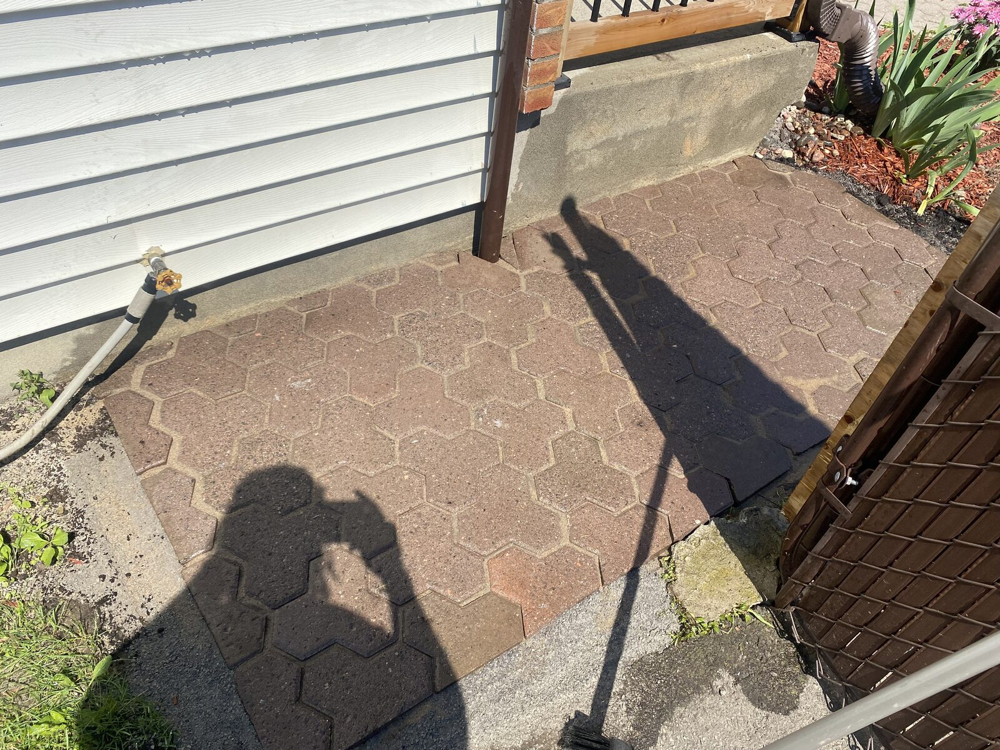
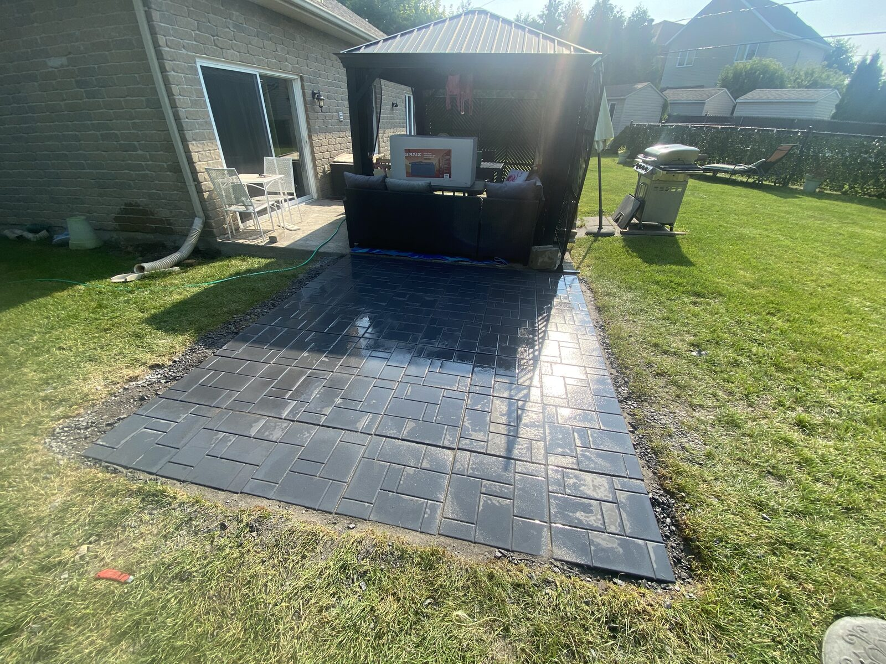
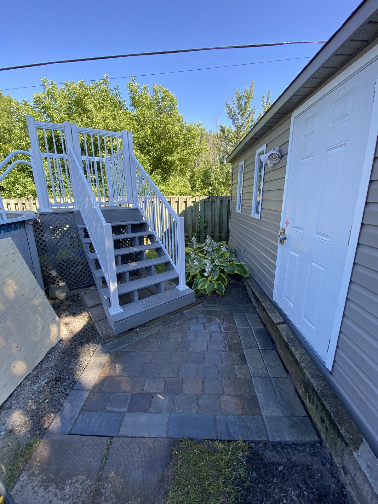
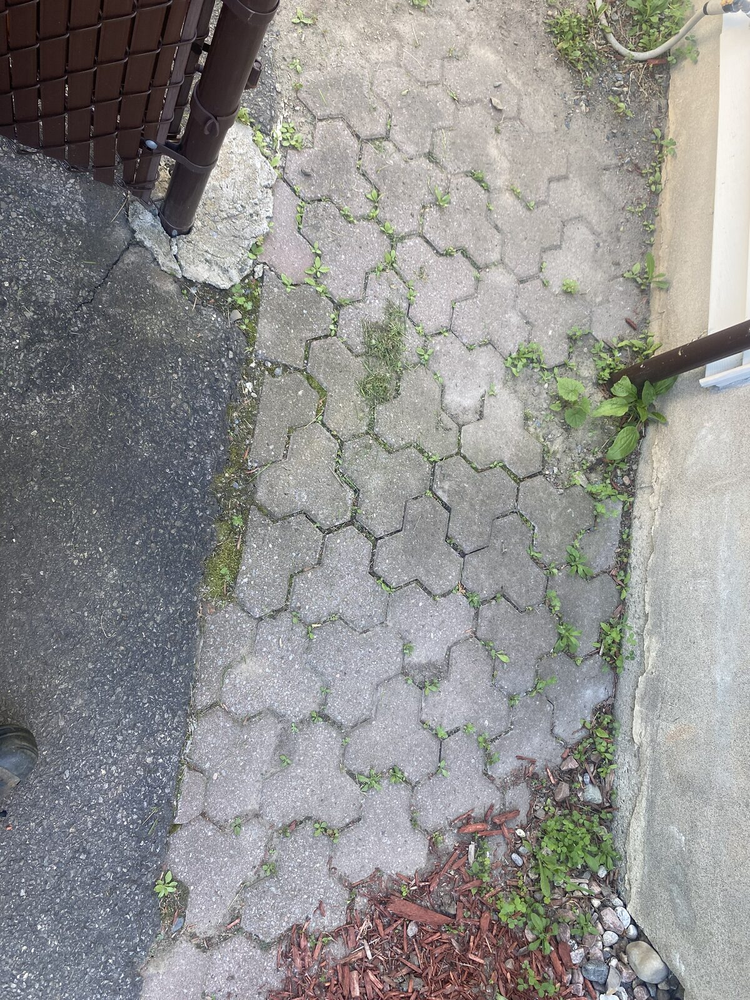

Installation, réparation et entretien — des surfaces durables qui rehaussent votre propriété.
Le pavé-uni, c'est notre cœur de métier. Nous intervenons sur tous types de surfaces : entrées, allées, sentiers, patios et bien plus. Qu'il s'agisse d'une installation complète ou d'une réparation ciblée, notre équipe garantit un résultat soigné et durable.
Avec le temps, les pavés s'affaissent ou se déplacent. Nous réalignerons chaque pavé pour retrouver une surface plane, stable et sécuritaire — sans remplacer toute la surface.
Pavés fissurés, cassés ou décolorés ? Nous les retirons et les remplaçons par des pavés assortis, pour un résultat homogène et esthétique.
Vous souhaitez créer une nouvelle allée, un trottoir ou un patio ? Nous réalisons l'installation complète, de la préparation du sol à la finition, avec les matériaux de votre choix.
L'entretien régulier prolonge la vie de vos pavés. Nous effectuons le nettoyage à pression des joints et procédons au remplacement du sable polymère pour une protection optimale contre les mauvaises herbes et l'eau.
En savoir plus sur le nettoyageChaque espace est unique. Voici les types d'aménagements que nous réalisons.
Allées piétonnes et sentiers en pavé-uni, élégants et durables.
Trottoirs latéraux, passages et chemins menant à votre entrée.
Dalles posées en pas japonais pour un effet naturel et contemporain.
Espaces de détente en pavé-uni pour profiter pleinement de l'extérieur.



La transformation de vos surfaces, en images.

Contactez-nous pour une soumission gratuite. Nous évaluerons votre projet et vous proposerons la meilleure solution.
Demander une soumission gratuite